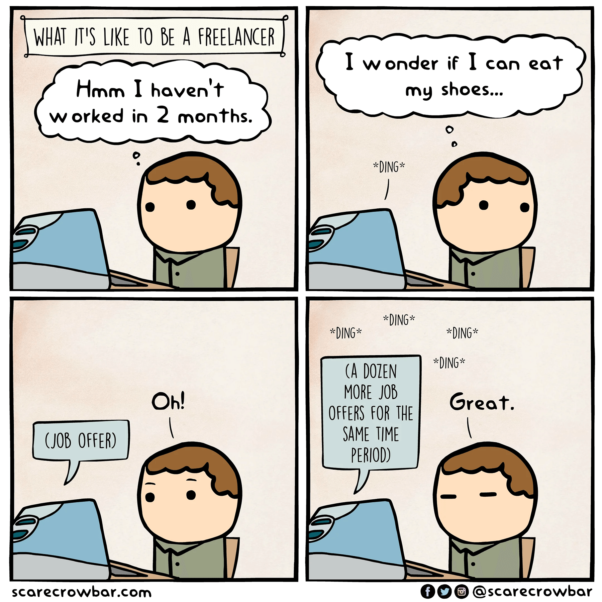
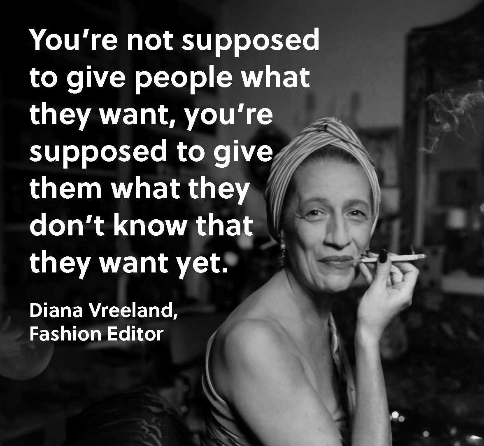

My Background
- Environmental Science
- Financial Economics
- Nutrition
- Instructional Design
- Freelance Instructional Design + Web Development


Who Are You?
Is Freelancing Right for You?
Autonomy
You want to be your own boss
Freelancing
=
You want external structure
Freelancing
=
Social Environment

Work-Life Balance

Financial Needs
You are okay with peaks and valleys
Freelancing
=
You need a steady paycheck
Freelancing
=
Versatility
You are comfortable doing all the jobs
Freelancing
=
You don’t feel comfortable stepping outside your “scope”
Freelancing
=

Skills to Have
Technical
- HTML, CSS, JavaScript
- Creative Cloud
- Accessibility (WCAG)
- Visual communication
- Copy writing

Professional
- Organization
- Design Thinking / Human-Centered Design


Starting Out
- Start
- Have a website
- Do good work
- Be ready to wait



Beginning a Project
- 1 Contact
- 2 Meeting
- 3 Confirmation
Things I like to know:
- What are you looking for?
- What’s the point?
- What do you have right now?
- What’s your timeline?
- How do you see this being maintained in the future?
- How flexible are you with...?

Things they like to know:
- How much will it cost?
- What’s your timeline?
- What’s your process?
- What’s your background?

Red flags:
- “We already have all the content.”
- “So and so will write all the content, you just design it!”
- “You create it, and our team will take it over.”
- “We need this done ASAP.”
- “We just need a small change...”

Beginning a Project
- 1 Contact
- 2 Meeting
- 3 Confirmation
Confirmation (a.k.a. the Contract)

Managing Projects
- Give people something to react to
- Give people what they want (it’s not necessarily what they ask for)
- Document your work

